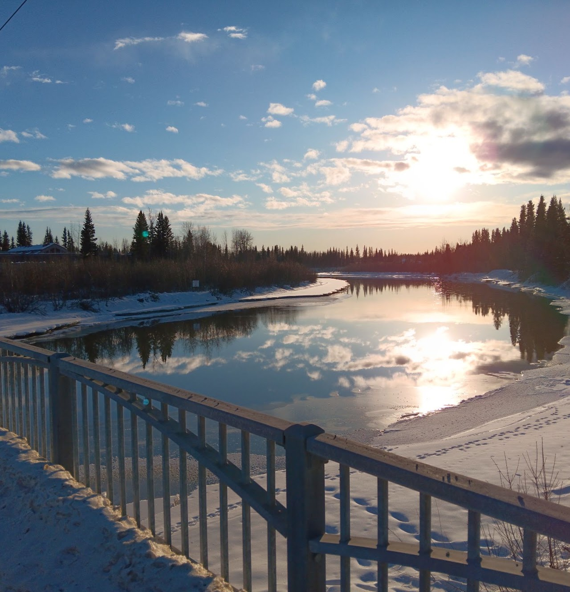

Introduction
Welcome to my website! This is where you can learn about me and my various pursuits.
Currently, I am finishing a Bachelor's degree in Computer Science with emphasis on natural language processing (NLP), human-computer interaction (HCI), and data science and pipelines. I am also an intern at Alaska Satellite Facility.
This website will allow you to learn about my academic, professional, and personal projects.
Please visit my CV page to learn more about my background and for contact information.